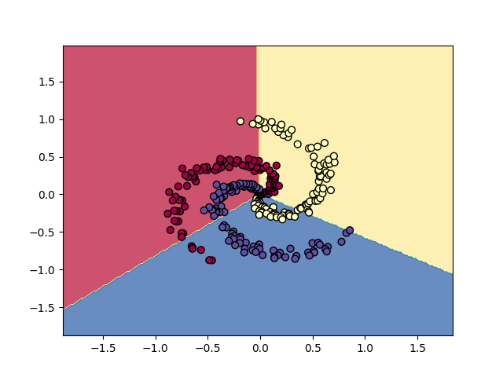
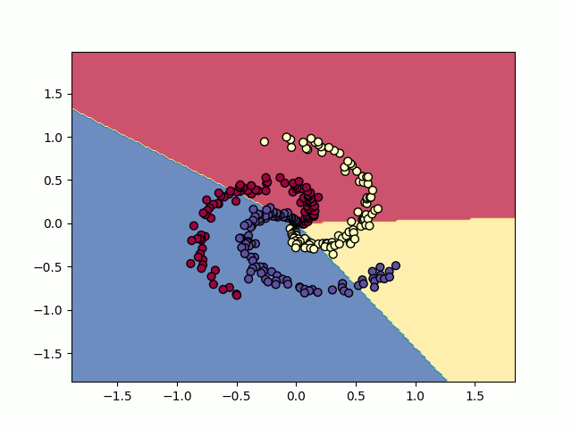

Same image as above (placeholder)

When \(a \ne 0\), there are two solutions to \(ax^2 + bx + c = 0\) and they are \[x = {-b \pm \sqrt{b^2-4ac} \over 2a}.\]
Batch normalization (including the learnable parameters gamma and beta)
Look up pytorch implementation